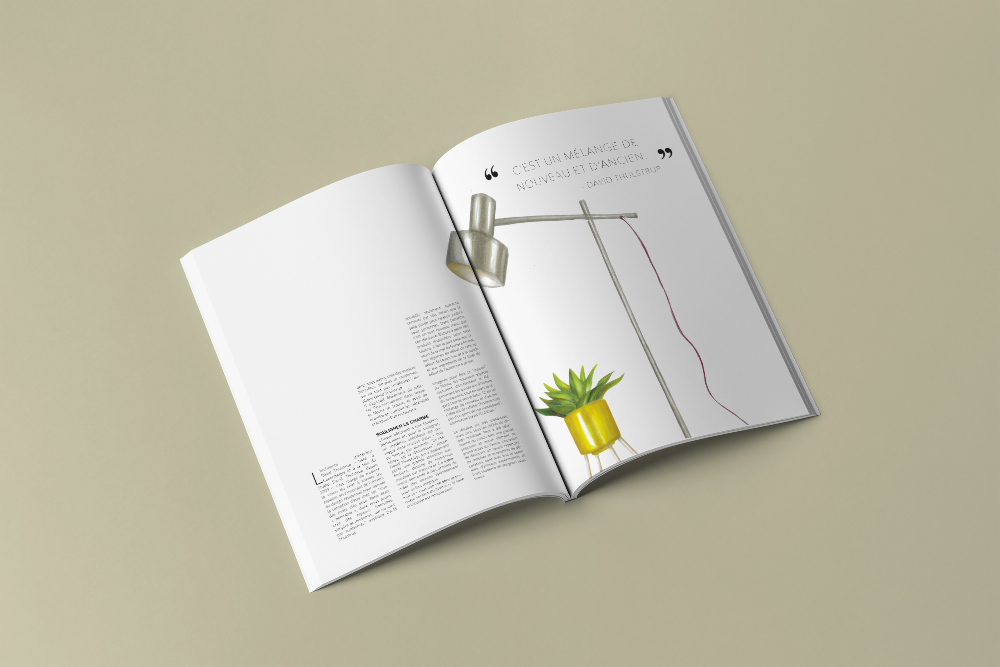

This is also a project in the second half of the second grade. For this we need to choose our tone and color. We imagine a magazine in the form of Rough. We plan to design a decorative magazine on the theme of interior design and recycling of old objects.
Back to Home
Tianyi Qin ECV Bordeaux, France